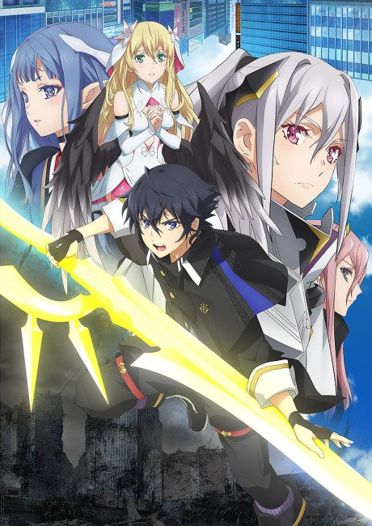
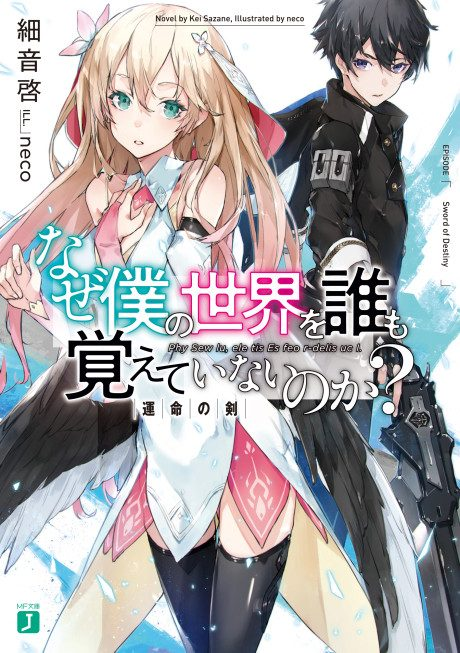

Why Does Nobody Remember Me in This World?
なぜ僕の世界を誰も覚えていないのか？
Kai wakes up in a rewritten history where humanity lost the war, and he's the only one who remembers the old world.
After the anime, read the light novel from Volume 5.
6.2AniList score
—Animeter, no votes yet
12episodes
Rate it or report where you stopped
Anime finished. Where does the story go next?
Start at Volume5
The anime ends at light novel volume 4, so start at volume 5. The light novel is complete at 9 volumes; the manga has an original ending.
149 end
Season 1Start reading here